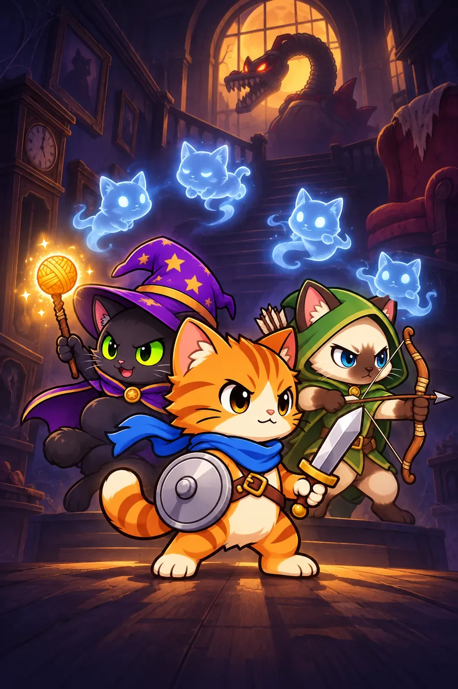
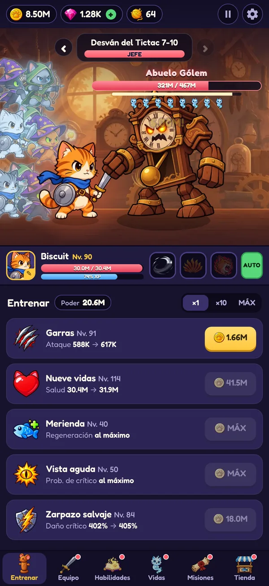
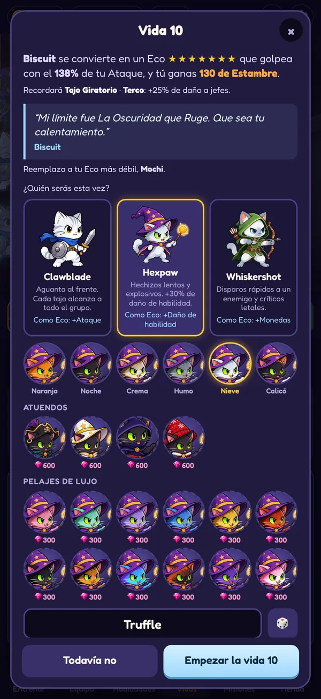
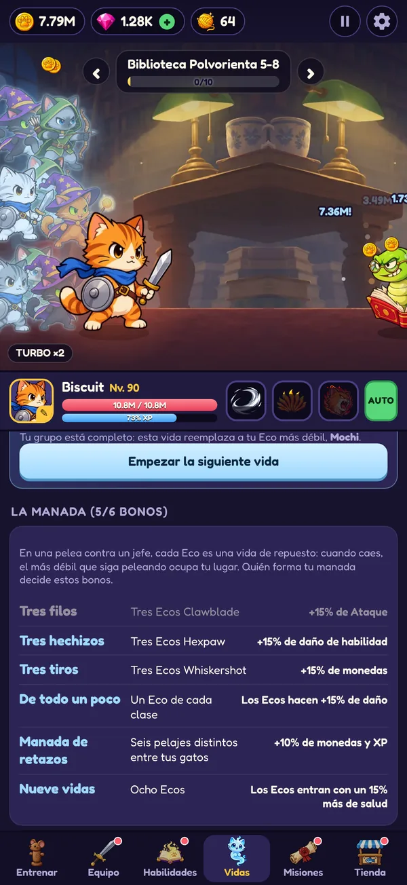
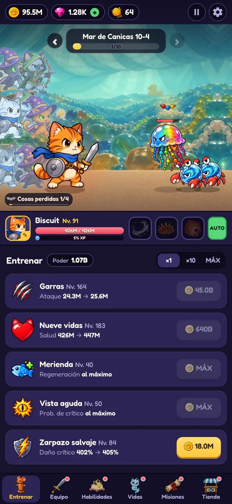
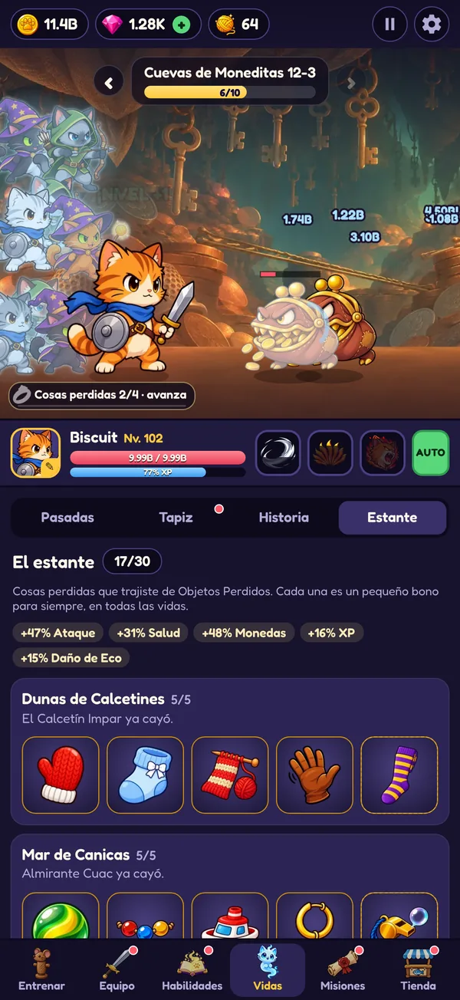
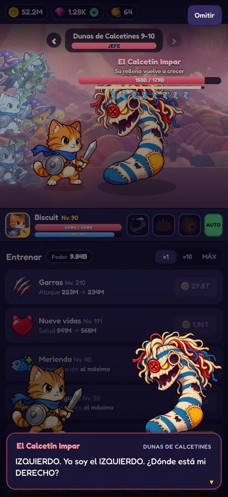

Pawst Lives
El RPG idle donde tu grupo son tus propias vidas pasadas.
Un gato tiene nueve vidas. Las tuyas pelean todas a la vez. Cuando una vida ha llegado tan lejos como puede, empiezas la siguiente, y el gato que fuiste regresa como un Eco: un fantasma que pelea a tu lado desde entonces.
Consíguelo en el App Store: gratisPara iPhone y iPad. Sin anuncios. Sin cuenta. Se juega sin conexión.

Nueve gatos. Un héroe. Todos tuyos.
Cuando se apagan las luces, la casa se convierte en una mazmorra. El aspersor del jardín es una hidra. La tostadora es un dragón. Y en algún lugar de la oscuridad bajo la escalera, la aspiradora te espera.
Vive una vida
Juega como Clawblade, Hexpaw o Whiskershot. Tu gato pelea solo mientras tú lo entrenas, le pones lo que encuentra y eliges el momento de sus habilidades.
Termínala bien
Cuando un jefe no caiga, empieza tu siguiente vida. Cuanto más lejos llegó la anterior, más fuerte es el Eco que deja.
Pelea junto a tus fantasmas
Hasta ocho Ecos se unen a ti, y cada uno conserva la habilidad que más entrenó. Si caes ante un jefe, un Eco ocupa tu lugar: cada uno es una vida de repuesto.
Cómo se ve
Cada imagen es el juego tal como funciona en un iPhone. En un iPad es el mismo juego, llenando la pantalla.






Idle cuando quieras, a mano cuando no
Se juega solo cuando no tienes tiempo y te recompensa cuando sí.
Una casa embrujada
Ocho habitaciones, del Portón del Jardín a La Oscuridad que Ruge, cada una con sus monstruos y su jefe. Cangrejos de Lata. Duendes de Calcetín. Una lavadora con tentáculos.
Siempre hay algo que mejorar
Entrena cinco atributos, sube tres habilidades por clase, mejora cuatro piezas de equipo y teje en el Tapiz mejoras que nunca se reinician.
Forma una manada
Bonos por tres Ecos de la misma clase, uno de cada clase, seis pelajes distintos o los ocho completos.
Siestas, no tareas
Si te vas, tus gatos duermen la siesta. Al volver encuentras unas monedas y un gato descansado que gana el doble por un rato.
Toca, elige el momento o déjalo solo
Salta al ataque contra un enemigo, guarda una habilidad para el momento justo o deja todo en automático.
Cosas gratis todos los días
Misiones diarias, hazañas de por vida y un regalo diario, todo con gemas que nunca tienes que comprar.
Justo y tranquilo
Hecho por una sola persona, que quería un juego que te deje en paz.
- Sin anuncios
- Sin cuenta
- Sin rastreo
- Se juega sin conexión
No se recopila nada sobre ti: la etiqueta de privacidad del juego en el App Store dice que no se recopilan datos, y la política de privacidad (en inglés) cabe en una página. Es gratis, con seis compras opcionales (gemas y dos mejoras de pago único que duran para siempre) y sin suscripciones. Nada en el juego las necesita, y nada de lo que compras se deja a la suerte: no hay cajas de botín.
iPad, cinco idiomas más y nada de suerte en la Tienda
- iPad. Todo el juego, llenando la pantalla.
- Tu partida te sigue. Se guarda en tu propio iCloud además de en tu dispositivo, así que un iPhone nuevo o un iPad encuentra tus gatos donde los dejaste. Sigue sin haber cuenta.
- Español, portugués (Brasil), francés, alemán y japonés. Todo el juego, historia incluida. Sigue el idioma de tu dispositivo, y en Ajustes hay una tarjeta de Idioma si prefieres jugar en otro.
- Sin cajas de botín. El Cofre de equipo ya no deja nada a la suerte: te enseña sus cuatro piezas de equipo y tú eliges una.
- Recordatorios, si los quieres. Apagados hasta que los actives.
Preguntas
¿Pawst Lives es gratis?
Sí. Se descarga gratis y se puede jugar hasta el final sin pagar. Hay seis compras opcionales dentro de la app: cuatro paquetes de gemas y dos mejoras de pago único que duran para siempre. No hay suscripciones.
¿Tiene anuncios?
No. No hay anuncios de ningún tipo, y nunca los ha habido.
¿Puedo jugar sin conexión?
Sí. Todo el juego funciona sin conexión. Cuando hay conexión, las recompensas diarias comprueban la fecha real.
¿Qué es un RPG idle?
Un juego de rol que sigue adelante por sí solo. En Pawst Lives tus gatos pelean solos; tú decides qué entrenar, qué ponerles, cuándo usar una habilidad y cuándo una vida ha llegado lo bastante lejos como para empezar la siguiente.
¿Necesito una cuenta? ¿Qué recopila?
No hay cuenta ni inicio de sesión, y el juego no recopila nada sobre ti. Consulta la política de privacidad (en inglés).
¿Está en iPad o en Android?
Funciona en iPhone y iPad, y una partida guardada en tu iCloud pasa de uno a otro. No hay versión para Android.
¿En qué idiomas está?
En español, inglés, portugués (Brasil), francés, alemán y japonés. El juego sigue el idioma de tu dispositivo, y en Ajustes hay una tarjeta de Idioma para elegir otro.
Algo no funciona. ¿Dónde pido ayuda?
La página de ayuda (en inglés) explica las partidas guardadas, las compras y cómo superar a un jefe, y tiene una dirección a la que escribir.